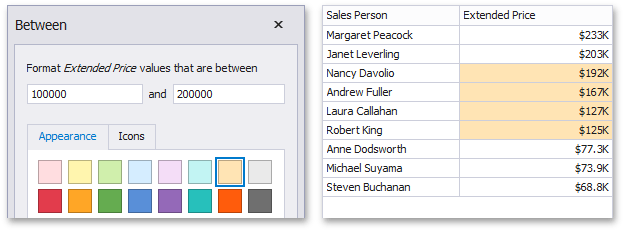
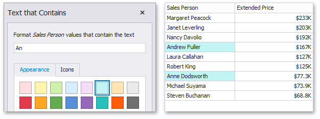

Value
The Value format condition allows you to compare static values (such as Greater Than, Less Than, Between, etc.).
The following condition types are supported for measures or date-time dimensions:
Greater Than/Greater Than or Equal To
The "Greater Than"/"Greater Than or Equal To" format conditions allow you to apply formatting to elements whose values are greater than/greater than or equal to the specified value. For instance, the following image displays a Grid dashboard item whose Extended Price cells are filled in green if their values are Greater Than 150 000.

This format condition can be applied to measures or date-time dimensions.
Less Than/Less Than or Equal To
The "Less Than"/"Less Than or Equal To" format conditions allow you to apply formatting to elements whose values are less than/less than or equal to the specified value. For instance, the following image displays a Grid dashboard item whose Extended Price cells are filled in red if their values are Less Than 150 000.

This format condition can be applied to measures or date-time dimensions.
-
The "Equal To"/"Not Equal To" format conditions allow you to apply formatting to elements whose values are equal to/not equal to the specified value. For instance, the following image displays a Grid dashboard item whose Sales Person cells are filled in blue if their values are equal to 'Robert King'.

This format condition can be applied to measures, string or date-time dimensions.
-
The "Between"/"Not Between" format conditions allow you to apply formatting to elements whose values are between/not between the specified values. For instance, the following image displays a Grid dashboard item whose Extended Price cells are filled in orange if their values are Between 100 000 and 200 000.

This format condition can be applied to measures or date-time dimensions.
-
The "Text That Contains" format condition allows you to apply formatting to elements whose values contain the specified text. For instance, the following image displays a Grid dashboard item whose Sales Person cells are in cyan if their values contain the 'An' text.

This format condition can be applied to measures, string or date-time dimensions.